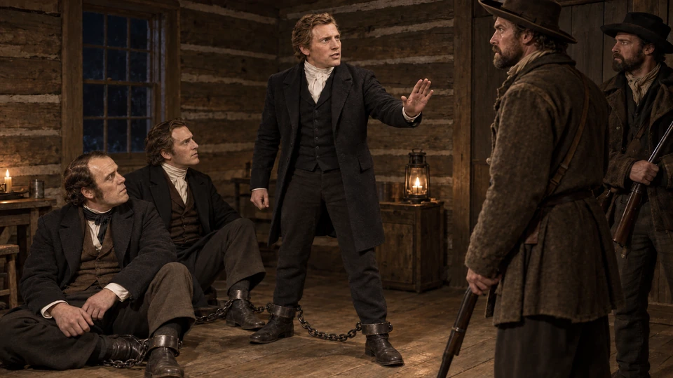
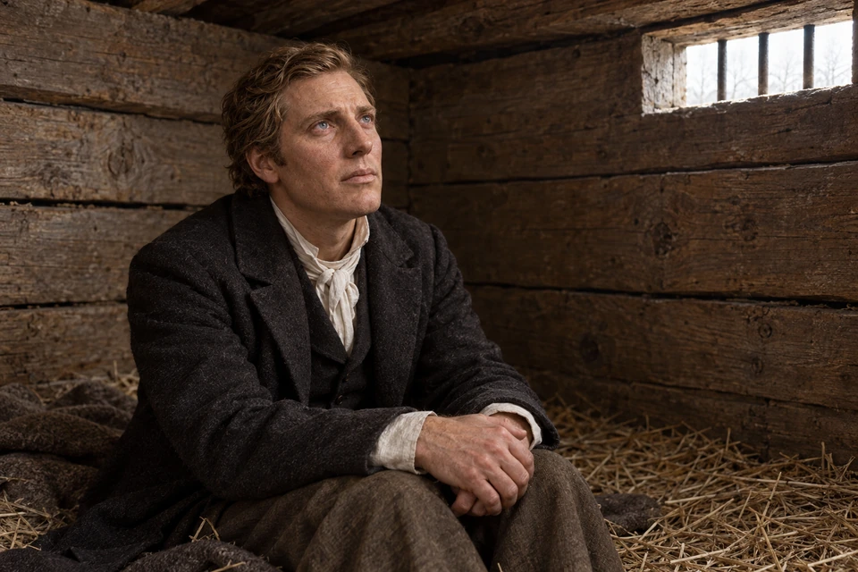
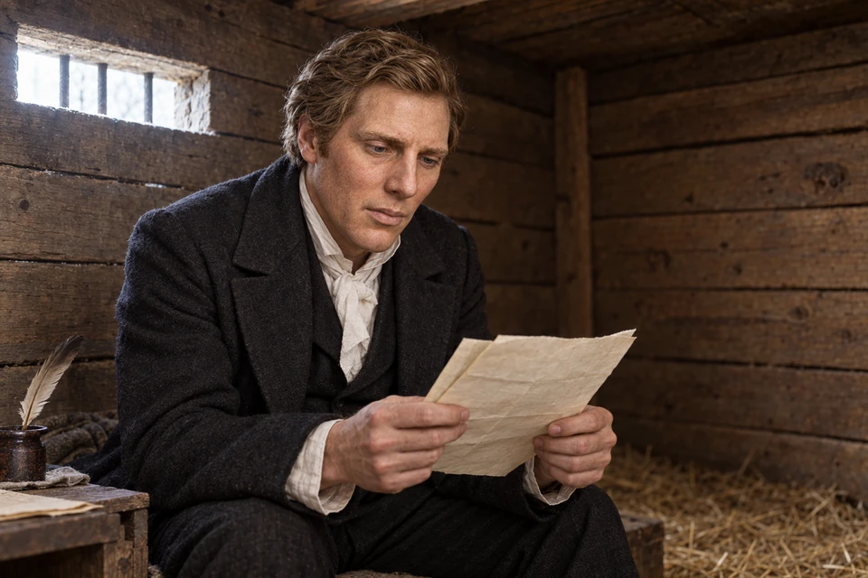
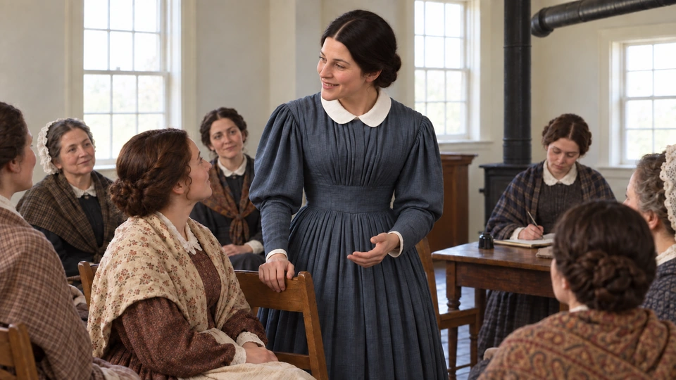
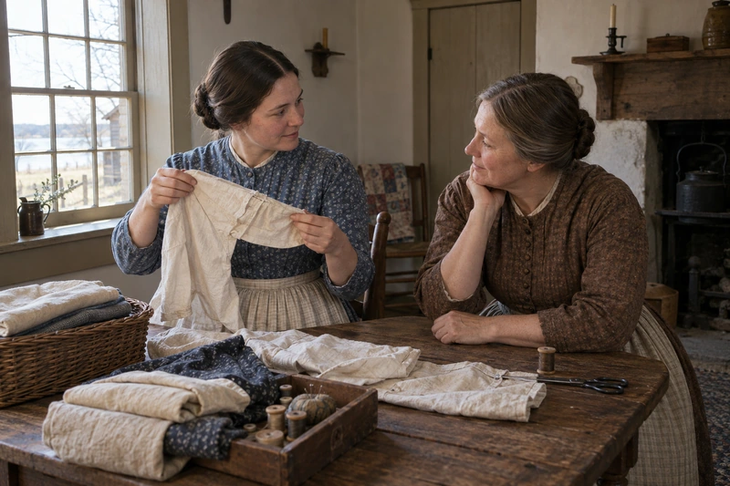

An illustrated Joseph Smith study
The Face Behind the History
Explore the death masks, portraits from life, and the creative likeness developed for focusChrist through an art-led journey.

Faith, Restoration, and Remembrance
Explore the Restoration through trusted Church history sources.
An illustrated Joseph Smith study
Explore the death masks, portraits from life, and the creative likeness developed for focusChrist through an art-led journey.
The coming forth of scripture
Follow the translation and its surviving manuscripts, compare witness accounts, and explore the record’s language and ancient context. The enriched study connects historical sources with the invitation to come unto Jesus Christ.

Begin with Joseph Smith's accounts of the experience that opened the Restoration, then follow the official historical sources as the story unfolds.
Source-grounded study assistant
Ask naturally. The assistant predicts the likely historical source family, adds verified official study routes, remembers the current conversation for follow-up questions, and keeps official Church History and Saints above model memory.
AI-assisted answers are study aids and may contain errors. Unreviewed questions and limited recent context may be sent to external AI providers for research and verification. Please do not submit sensitive personal information.

The history of the Restoration includes quiet days of writing, supporting, questioning, and continuing with faith.
A focused priesthood study
Follow Joseph Smith and Oliver Cowdery from their question about baptism to John the Baptist’s message and the baptisms that followed. Read the scriptural account alongside its historical sources, then consider how preparation, repentance, and service point toward Jesus Christ.
A focused priesthood study
Study the testimony of Peter, James, and John’s ministry to Joseph Smith and Oliver Cowdery. Follow the surviving scriptural and historical witnesses, keep the unanswered questions visible, and consider the Lord’s teaching about how priesthood authority should be exercised.
The current narrative history
The Church's Saints series currently presents the history from the early Restoration through 2020 in four volumes. Use the era cards as the primary narrative path, then move into topic-specific Church History sources when a question needs closer examination.

Oliver Cowdery, David Whitmer, and Martin Harris gave their names and testimony to the Book of Mormon record.
Early Restoration, Joseph Smith, the rise of the Church, Kirtland, Missouri, Nauvoo, and the opening of the westward exodus.
Read on ChurchofJesusChrist.org → Volume 2 1846–1893The pioneer era, settlement and global gathering, conflict and change, temples, plural marriage, and the closing decades of the nineteenth century.
Read on ChurchofJesusChrist.org → Volume 3 1893–1955A changing worldwide Church through modernization, two world wars, new institutions, growing missions, and expanding international membership.
Read on ChurchofJesusChrist.org → Volume 4 1955–2020The increasingly global Church, worldwide growth, temples, missionary expansion, institutional change, and the modern era through 2020.
Read on ChurchofJesusChrist.org →
The translated record moved into print, where ordinary labor helped carry its witness to readers and generations beyond.
Kirtland · March 27, 1836
Explore and study
People approach the temple along a worn path. Its walls recall years of shared labor and sacrifice before the dedication in 1836. Read the dedicatory prayer and consider what it means to enter the Lord’s house seeking learning, faith, and a heart prepared to serve.
Read Doctrine and Covenants 109:7–9 Read Doctrine and Covenants 110
The Kirtland Temple brought worship and learning into a house built through shared sacrifice. Stone came from a nearby quarry; carpenters and other workers contributed their skills. Its assembly rooms included tiers of pulpits at opposite ends. On March 27, 1836, the Saints gathered for the dedication, and Joseph Smith offered the prayer now preserved in Doctrine and Covenants 109. Study the temple’s construction and purpose.
Begin with Doctrine and Covenants 109:7–9. The prayer brings learning, faith, order, and worship together. Let each part become a question about your own preparation. What helps you listen? What are you willing to learn? Where could greater order make room for prayer without turning your home into a place of pressure or perfectionism?
Then read Doctrine and Covenants 110:1–10, the account of Joseph and Oliver’s vision a week after the dedication. Attend to the Savior’s words and to the relationship between a sacred place and a people who seek Him. The building’s meaning reaches beyond its architecture into the lives of those who worshipped there.
Consider an ordinary skill you could contribute to someone else’s spiritual growth: teaching a child, preparing a lesson, repairing something, or making a gathering welcoming. Write down one action. Remembering the temple’s builders can help us notice the quiet labor through which a community makes room for worship.
Explore and study
The open ledger and Joseph’s troubled expression invite a careful look at Kirtland’s financial crisis. The losses affected real families and strained trust. Study the record honestly, then consider how humility, accountability, and compassion can guide us when hopes and decisions go wrong.
In 1836, Joseph Smith and associates organized the Kirtland Safety Society, hoping to provide credit and support a growing community. The Ohio legislature did not grant it a bank charter. Its leaders nevertheless began operating an unchartered financial institution in January 1837. It failed that year, bringing substantial losses to Joseph and other participants. The Church's history acknowledges that disappointed expectations contributed to a crisis of confidence and faith. Read the Church's historical account.
The failure had several causes. Insufficient funding, opposition, and the lack of a charter created vulnerabilities; the broader Panic of 1837 deepened the difficulties. National conditions provide context without removing responsibility for local decisions. Examine the Joseph Smith Papers' economic analysis.
There were legal consequences as well: Joseph and Sidney Rigdon were tried and fined for circulating notes contrary to an Ohio banking statute. Leaders had expressed optimism about the institution, and some members felt betrayed when financial pain followed. A careful reading makes room for those losses and reactions; it does not dismiss everyone who struggled as faithless. Study the legal context and the Saints' responses.
The surviving notes and financial records invite study beyond a simple success-or-failure slogan. Read Doctrine and Covenants 121:41–42 as a later standard for compassionate leadership. How can we acknowledge harm, listen to disappointment, and act with integrity? Studying difficult decisions can deepen our concern for the people affected, even when their experiences and responses differ from our own. Continue with a careful approach to historical evidence.
Courage before Liberty Jail
The scenes below invite us to imagine these moments in Church history. Read their linked accounts alongside the artwork; the records preserve the events, while the pictures give them an interpretive setting.

Explore and study
Joseph stands before the guards while his companions remain close beside him. This scene draws on Parley Pratt’s later account of the rebuke at Richmond. Consider the courage it takes to speak with dignity when another person’s words cause harm.
Read the Richmond account Read Doctrine and Covenants 121:41–44
In November 1838, before Joseph Smith was confined in Liberty Jail, he and other prisoners were held in a log house in Richmond, Missouri. Shackles and a heavy chain bound them together as they tried to rest on the cold floor. Parley P. Pratt later recalled the guards speaking boastfully about violence against the Saints.
In Pratt’s account, Joseph stood and commanded them to stop in the name of Jesus Christ. The guards quieted and asked his pardon. Read the episode in Saints, chapter 31, which cites Pratt’s later recollection and autobiography.
Consider the courage it takes to defend the dignity of people who cannot answer for themselves. Then carry that question into Liberty Jail: how do conviction, compassion, and restraint belong together? The teachings that emerged there invite us to examine how we use our own words and influence.
Prayer, patience, and the use of power
In March 1839, Joseph Smith was separated from his family while the Saints struggled to find safety beyond Missouri. He and his fellow prisoners had spent months in Liberty Jail. Cold, poor food, and uncertainty wore on them. Letters could bring comfort, but they also carried news of other people’s suffering. Read the experience within the walls before turning to the words that came from them.

Explore and study
Joseph’s upward gaze holds the strain of waiting and the courage to keep asking. Read his plea alongside the Lord’s answer, then bring a question of your own into prayer. Peace can begin as we turn toward Christ, even while a difficult circumstance continues.
Read Doctrine and Covenants 121:1–9 Read Doctrine and Covenants 122:7–9
“O God, where art thou?” begins the plea preserved in Doctrine and Covenants 121:1–9. Joseph asks how long suffering will continue. The answer addresses him as a son and offers peace, endurance, and the assurance of friendship. Read the question and the answer together. Faith here includes the courage to tell God how hard the waiting has become.
In Doctrine and Covenants 122:7–9, the response turns Joseph toward the Son of Man, who descended below all things. Christ’s suffering gives the passage its depth. Consider what it means to trust His understanding while an answer, release, or healing is still beyond your sight. This is an invitation to seek His companionship in pain, never a reason to dismiss someone else’s distress.

Explore and study
Joseph studies pages in the quiet of the jail. His letters reached beyond those walls to people facing fear and displacement. Read the counsel about gentle influence and willing action, and consider one word of encouragement or practical kindness you could offer someone today.
Read Doctrine and Covenants 121:41–46 Read Doctrine and Covenants 123:17
Passages from Joseph’s March letters became Doctrine and Covenants 121, 122, and 123. Explore the Church History Library’s letter exhibit.
The surviving letter carries the handwriting of Alexander McRae and Caleb Baldwin, with insertions by Joseph. These were words dictated, written, and shared with a scattered Church. Examine the manuscript and its source note. The document lets us follow the counsel beyond familiar quotations into the circumstances of the people receiving it.
Doctrine and Covenants 121:41–46 describes influence through persuasion, patience, gentleness, and genuine love. Read it with a relationship in mind: where could listening replace pressure? Doctrine and Covenants 123:17 joins willing action with trust in God. Choose one helpful thing within your power today, then bring what you cannot control back to Him.
As you finish, write down the phrase you most need to remember. Beside it, name someone whose burden you could help carry. Let your reading become a patient conversation, a practical kindness, or a prayer offered with greater honesty.
Explore and study
Joseph listens as a volunteer speaks. The Legion’s history brings together the Saints’ desire for protection and the fears their growing power stirred among neighbors. Read the record with care, and consider how responsibility, restraint, and respect for others can shape a community’s peace.
The Nauvoo Legion was a contingent of the Illinois militia authorized by the city's charter, not merely an informal gathering of armed Church members. Joseph Smith became its lieutenant general on February 4, 1841. Its organization included infantry and cavalry, with regular training and public reviews. Explore the Joseph Smith Papers' records of the Legion.
For people who had fled violence in Missouri, civic protection held deep meaning. Joseph described the Legion's purpose as protecting Nauvoo against mobs and enforcing the law. The Church History Museum preserves his military effects, including a cloak, epaulets, and sword, and explains the militia's place in the community. Its parades also became prominent public occasions. View the objects and their history.
The same growing force that reassured many Saints alarmed some neighbors and political leaders. Questions about military power became entangled with Nauvoo's wider conflicts. In June 1844, Governor Thomas Ford ordered the Legion to surrender its state arms; the museum account records its compliance. Repeal of the city charter in January 1845 ended the Legion's legal standing under that charter. These tensions belong in the story alongside the community's desire for safety. Read about opposition and disarmament.
Maudsley's historical uniform portrait helps distinguish ceremonial appearance from an imagined battle scene. Consider Doctrine and Covenants 134:1–5: how can a community protect religious liberty while respecting the rights and security of others? Continue to faith during imprisonment or the earlier witnesses of the Book of Mormon.
Nauvoo · March 17, 1842

Explore and study
Emma meets a listener’s eyes as the women gather to organize their work. Their shared attention invites us to consider how belonging becomes service. Read the founding minutes and ask whom your own circle could strengthen through practical care.
In the upstairs room of the Red Brick Store, women gathered to organize their service. The surviving minutes of March 17, 1842 record a meeting with prayer, discussion, decisions, and donations. Emma Smith was unanimously elected president and chose Sarah Cleveland and Elizabeth Ann Whitney as counselors. Caring for people in need was part of their stated responsibility. These pages let us hear women considering how to act together.
Notice how much faithful service involves listening and deciding. The minutes preserve discussion about the society’s name and the work it would undertake. After the men withdrew, the women appointed a secretary and treasurer. Read slowly enough to notice their initiative, voices, and practical responsibilities. A record of names and motions can open into a story of people learning to share the work.
Read Doctrine and Covenants 25:7–10 alongside the meeting record. Consider the relationship between learning, teaching, and encouragement. Then turn to Mosiah 18:8–10: whose burden could you help carry without taking away their dignity or voice?
Choose one need you can understand more fully this week. Ask, listen, and offer something specific. A meal, a visit, patient teaching, or shared responsibility can make care tangible. The historical record invites us to see organized service as people making room for one another, with Christ at the center of their effort.
As you read, notice whose contribution you might otherwise overlook. Who keeps the record, provides the resources, notices a need, or encourages someone to speak? Give thanks for a person whose steady service has helped you belong.

Explore and study
A small shirt is held up beside folded cloth as two women share the work. The early Relief Society donation record includes clothing and household textiles, reminding us how practical gifts can meet ordinary needs.
Friendship through hardship
Explore and study
Joseph’s hands rest on Porter’s arms as the two friends recognize one another. Their welcome draws us into the Christmas reunion recorded in Joseph’s journal. Think of someone returning from a hard experience: how could your attention and friendship help that person feel known?
On Christmas Day in 1843, a road-worn stranger walked into the Smith family’s celebration in Nauvoo. His hair fell over his shoulders, and his behavior caused such a disturbance that Joseph called for him to be put outside. Then Joseph saw his face. The stranger was his old friend Porter Rockwell. Joseph’s journal records the recognition with the words “Joy untold.” After months of imprisonment and a difficult journey home, Porter had reached people who knew him. Read the contemporary journal entry.
Their friendship reached back to the neighborhood where the Book of Mormon came forth. The Rockwells and Smiths were neighbors in western New York, and Porter joined the Church in 1830. He was part of the circle of friends and families whose lives became bound to the Restoration. His story opens another way to study that community alongside the scribes, witnesses, and printers who helped bring the record to readers. Explore Porter’s documented life.
Porter’s loyalty is memorable, and his life also requires careful reading. It involved violence, accusations, and a reputation later enlarged by frontier stories. In the case behind his 1843 imprisonment, a grand jury did not indict him for the attempted murder of former governor Lilburn Boggs; that does not settle every historical question. The Church History Library explains why many familiar stories about him are difficult to verify. Examine the records behind the legends.
The Christmas reunion offers something quieter to consider: what does it mean to recognize and welcome a friend after hardship? We can begin with this documented human encounter, ask what it teaches us about friendship, and keep reading the rest of Porter’s complicated life with honesty and care.
Nauvoo · 1841–1846
Explore and study
The temple rises above a city preparing for an uncertain future. Many Saints labored to finish it while also preparing to leave their homes. Study their sacrifices and the promises they carried west, then consider how worship can strengthen hope when the next step is difficult.
The original Nauvoo Temple rose through years of donated labor and resources. As departure from Illinois approached, Saints continued seeking its blessings. The temple was dedicated on May 1, 1846, although some portions remained unfinished. Its story holds together devotion, urgency, and loss: the building they had worked to complete could not remain their home. Read the history of the original temple.
The question is personal as well as historical: what can a sacred commitment give you when your circumstances become uncertain? In her later recollection, Sarah Pea Rich described temple blessings as a source of faith for the difficult journey west. The Church’s history preserves her perspective alongside the events of construction and departure. Her memory invites us to consider strength that can be carried beyond the place where it was first received.
Read Doctrine and Covenants 128:18–19 with family relationships in mind. What changes when you see your life as connected to generations before and after you? Continue with verse 22 and consider how gratitude can accompany difficult work.
Choose a family story, name, or memory to preserve. Ask someone a thoughtful question and record their answer with care. You do not need a complete family history to begin honoring those who came before you. Let this study lead to a small act of remembrance, reconciliation, or service that strengthens a living relationship today.

Careful preservation keeps journals, documents, photographs, and other records available for responsible historical study.
Verified official index
The official Church History hub brings together narrative history, topic studies, primary-vision resources, women's history, historical podcasts, essays, question-based videos, and global histories. These routes are indexed into the history assistant above and remain available here for deeper study.
Use the A–Z topic collection for people, events, practices, places, controversies, organizations, and historical developments.
Study Joseph Smith's First Vision through the Church's dedicated historical resources and accounts.
Explore women, organizations, experiences, and contributions across Latter-day Saint history.
Continue into Church-hosted historical podcast series connected with Joseph Smith-era documents and events.
Use the Church's in-depth essays when a historical question intersects with doctrine, practice, or complex historical context.
Follow concise Church-produced answers on frequently asked historical questions and sensitive subjects.
Study how the Church developed in countries and communities around the world rather than viewing history only through the American West.
Open all four Saints volumes together with Saints Stories and the Saints podcast from the official history library.

Journals, photographs and preserved records carry the faith and struggles of earlier disciples into the present. Studying them carefully helps each generation see how people sought to follow Jesus Christ.

Across periods, places, and people, the purpose of studying Church history is to understand the Restoration and draw closer to Jesus Christ.
Continue the journey
Move from the wider Church history record into the interactive pioneer journey, trail, and handcart experience.
Use the broader Ask experience for scripture, doctrine, belief, personal study, or general questions.
Continue into indexed focusChrist answer pages with official study paths and related topics.
Watch, read, and reflect
Church films can help you picture the setting. The historical sources remain the place to check details.

Church video
Watch Oliver Cowdery’s experience as a scribe, then return to the questions and reassurance in Doctrine and Covenants 6.
The Church of Jesus Christ of Latter-day Saints
Church video
Walk the historic setting with missionaries, then compare the surviving First Vision accounts.
The Church of Jesus Christ of Latter-day Saints
Try the question, “What do the First Vision accounts tell us, and why do they differ?” Begin with the Church’s First Vision Accounts essay, which introduces the accounts and discusses their settings. Follow its links to the records rather than relying only on a summary.
For each account, note who produced it, when it was recorded, its audience, and whether you are reading an original document, a transcript, or a later explanation. The date of an event and the date of a surviving account are different facts. Compare what each source includes before deciding what a difference means.
Historical study asks what the surviving evidence supports and where it leaves uncertainty. A spiritual inquiry asks a related but different question about religious meaning and belief. Neither a strong feeling nor a single missing detail settles every historical question. You can examine evidence carefully while treating the people and beliefs involved with respect.
Continue with his role, the claims associated with him, and a practical way to take source notes.
Move from the historical question to what the text teaches, keeping the two inquiries clear.
Distinguish individual records, wider historical context, and devotional application.
A useful closing note is modest: “This source supports…” followed by “I would need another source to know…” That practice makes room for learning without forcing a conclusion before the evidence warrants it. The Stand Forever study offers a companion framework for keeping foundational questions about Christ and the Restoration in view while examining secondary questions carefully.
Pause, pray, and respond
Choose one invitation after reading the accounts. Give the people in the story your careful attention, then consider what the scripture asks of you today.
Read Doctrine and Covenants 121:1–9 beside the Liberty Jail study. Notice the question at the beginning and the reassurance that follows. What would you like to say to Heavenly Father in your own words? You may begin with the question you actually have.
Return to Doctrine and Covenants 121:9. Joseph was reminded of friends who stood by him. Think of someone whose hardship may be continuing after others have stopped asking. What welcome, practical help could you offer this week?
Read Doctrine and Covenants 121:41–42. Consider a conversation in which you want to be heard. How could patience, gentleness, and sincere love shape both your words and your willingness to listen? Choose one change you can practice.
{kind=link}
{kind=link}
{kind=link}
{kind=link}
{kind=link}
{kind=link}
{kind=link}
{kind=link}
{kind=link}
{kind=link}